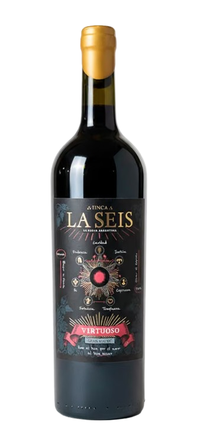

01
Vino
Conocer una expresión
Descubriremos la línea Virtuoso de Finca La Seis, Bodega La Macarena, aprendiendo sobre el vino mientras lo degustamos y dejamos que la copa acompañe la conversación.
Una noche para conocer el vino, acercarse a la historia y los símbolos de la Masonería y, sobre todo, conversar sin intermediarios.

Una experiencia pensada para acercarse a la Masonería de una manera distinta: con una copa de vino, tiempo para conversar y la posibilidad de preguntar aquello que siempre quisiste saber.
Descubriremos la línea Virtuoso de Finca La Seis, Bodega La Macarena, aprendiendo sobre el vino mientras lo degustamos y dejamos que la copa acompañe la conversación.
Un acercamiento accesible a la historia de la Masonería, sus símbolos, sus ideas y la forma en que una tradición de siglos continúa dialogando con el presente.
El corazón de la noche: un encuentro cercano, mesa de por medio, para conversar con masones, preguntar con libertad y conocer la institución desde quienes la viven. Sin discursos prefabricados. Con tiempo para escuchar y ser escuchado.
No es una ceremonia masónica ni una conferencia. Es un encuentro cultural y social, abierto a quienes tengan curiosidad genuina por conocer más.
Presentando en esta ocasión la línea Virtuoso de Finca La Seis, Bodega La Macarena.
El vino no será un acompañamiento: será uno de los lenguajes de la experiencia.
La participación requiere inscripción previa. Los lugares son limitados para preservar el carácter íntimo de la experiencia.
Quiero participar